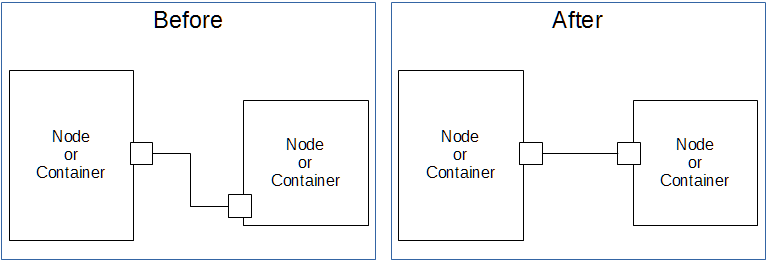
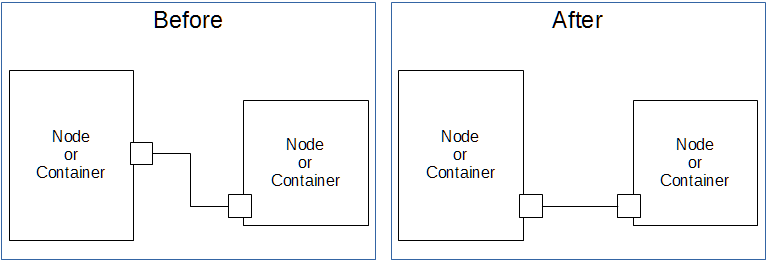
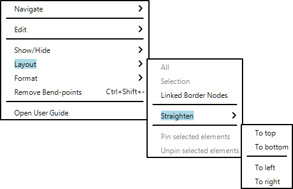
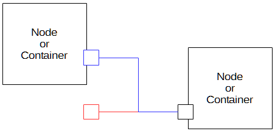
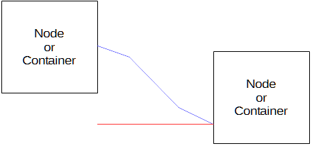
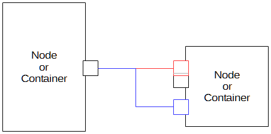
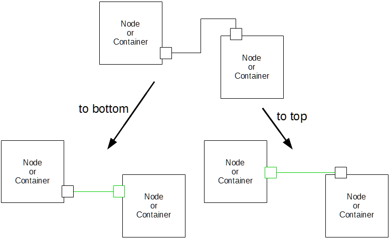
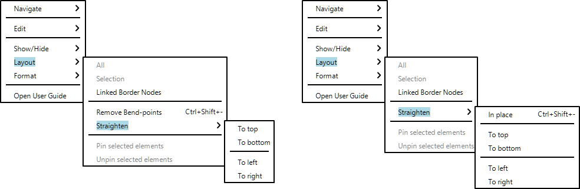

Summary: The goal of this evolution is to have commands to straighten an edge (horizontally or vertically).
| Version | Status | Date | Authors | Changes |
|---|---|---|---|---|
| v0.1 | DRAFT | 2016-08-18 | lredor | Initial version. |
| v0.2 | PROPOSAL | 2016-08-19 | lredor | Reviewed version. |
| v0.2 | PROPOSAL | 2016-08-29 | lredor | Remove change about Remove Bend-points action (added in tradeoffs section), complete/refactor Detailed Specification chapter. |
Relevant tickets:
The goal of this feature is to have new actions to transform an edge to an horizontal, or vertical, straight edge (with only one starting point and one ending point).
If the edge is connected to a border node, the border node is moved too.
There are 4 cases to straighten an edge. The first step, common to all cases is to remove all bendpoints (intermediate points between starting and ending points). Then we can:



These actions will be available in contextual menu of an edge (or several edges) in the layout sub-menu:

Each individual action mentioned above will only be available if it can be applied to
all the edges selected.
To summarize, the straighten actions will be authorized for edges:
These actions are not a constraint on the edge. They are «one shot» actions. The user can next create bendpoints on this edge, move it, ...
If the action is not authorized, the corresponding menu will be disabled.
Here is the list of forbidden cases, with illustration (see
1
for colors explanation).
Disclaimer: This list is here for information, to clarify main not supported cases. But is is not necessary comprehensive.





1 In illustration, the blue color is for edge and border nodes expected to be moved with action. And red color is for forbidden result (after the action if it had been launched).
All the rules explained before are also limited by the existing constraints:
No metamodel change is necessary for these new actions.
No API change is needed for these new actions.
The only change is the new menus for the 4 actions.
A new chapter will be added in the user guide and a new entry in release notes.
If the source and the target of the edge are not on the same axis (left and right, or, top and bottom), the straight could be authorized. It is a particular case, but the same rules seem to apply.
Example:

In the scope of this specification, this particular cases will be forbidden.
To be coherent, the existing action «Remove Bend-points», could also be moved in the same actions group and renamed Straighten > In Place. This is out of scope of this feature for 2 reasons:
